|
| Soluce
Goldeneye : Silo |
|
| Soluce
Goldeneye : Silo |
Un Niveau plutot sympa, inédit par rapport au Film. Très linéaire, ce Niveau n'en reste pas moins agréable, de part la quantité de Gardes présents, et les quelques Objectifs à remplir. Allons-y... En fait, les moments ou il faut (un peu) reflechir sont dans les Salles avec les Scientifiques. faut faire juste gaffe à pas les tuer trop) et à bien ramasser les Cartes qu'ils laissent tomber de peur. |
| Mettre
du Plastique sur les Réservoirs : 00 Agent |
Mettez du Plastique entre 2 Réservoirs. Vous avez 8 Plastiques. Un seul Pain entre 2 Réservoirs suffit. Pas de problèmes, comme dans Facility. Il y a 4 Salles ou mettre des Plastiques, alors n'en ratez pas une, ce serait fatal ! En Agent, vous n'avez pas à remplir cet Objectif, mais si vous mettez des Plastiques quand meme, vous aurez 6 Minutes pour foutre le camp ! En Secret Agent, ce sera 7.30, et 8.30 en 00 Agent. Juste assez de temps... |
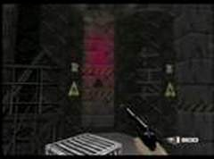
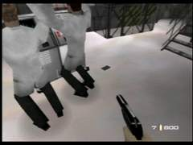
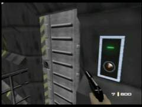
Quelque fois, il se peut que la Carte d'un Scientifique soit dans un recoin d'ombre... Ci-dessous, 1ere Photo, il faut toujours prendre à droite dans ces intersections. A la Fin, quand vous tombez sur Oroumov, c'est à Gauche. Si vous prenez sur la Droite dans ce genre d'intersection, vous trouverez un Gilet parfois. Y en a meme un en 00 Agent, cool ! Vous pouvez aussi exploser les Barils pour nettoyer ( Photo de Milieu ) c'est pratique ! |
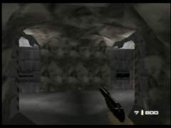
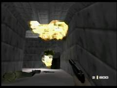

| Telemetric
Data et Circuits à retrouver : Secret Agent / 00 Agent |
Il y a 5 trucs en tout à récuperer. Quatre Bidules Verts et un Dat. Les Circuits Verts sont pas mal voyants, et le Dat, c'est un Scientifique qui l'a sur lui. Faites-lui peur et il tombera par terre (le Dat). |
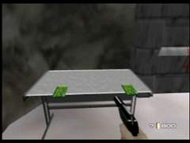 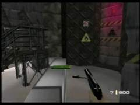
Ci-dessous, des Endroits ou çà chauffe pas mal. Attention aux Gardes qui se cachent derrière des Caisses, et qui parfois jettent des Grenades. Attention aussi dans les Longs Couloirs ou ils grouillent littéralement. Chaud ! |


| Photographier
le Satellite : Tous Niveaux |
Pas
dur çà... Seulement attention si vous laissez des Gardes
entre Vous et eux car si ils tirent, le Satellite explose et bye bye l'Objectif
! |
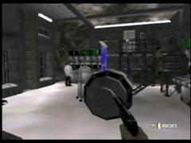 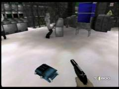 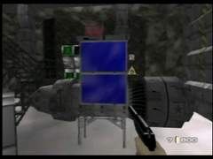
| Minimiser
les Pertes de Scientifiques : Tous Niveaux |
Pas
dur non plus, il suffit juste de se calmer et de ne tirer que sur tout
ce qui n'est pas Blanc ! Attention donc aux attroupements ou ils peuvent
choper des balles perdues... Enfin, le Niveau se termine par Oroumov qui
ordonne à ses Gardes de vous descendre. Courrez et prenez à
gauche, suivez le chemin, et vous trouverez un Ascenseur... Fin ! |
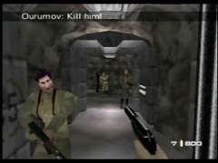